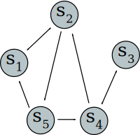

Graphs
Written by
Imanol H.
the 02-06-2017. Last revision the 02-06-2017
Let's imagine we have 5 bus stations, which we'll denote by s_i:
This is known as a "table of direct interconnections".
The V represent connected paths. For instance, on the first row starting at s_1, reaching the V, allows us to turn up to get to s_2.
We can see the above table represented in a more graphical way:
This type of graph is called, well, a graph, and it's a directed graph (or digraph), since the direction on which the arrows go does matter. It's made up of vertices, joined together by edges (also known as lines or directed arcs).
One can walk from a node to another through different paths. For example, s_4 → s_2 → s_5 is an indirect path of order two, because we must use two edges to go from s_4 to s_5.
Let's now represent its adjacency matrix called A which represents the same table, but uses 1 instead V to represent a connection:
This way we can see how the a_21 element represents the connection s_2 → s_1, and the a_51 element the s_5 → s_1 connection, etc.
In general, a_ij represents a connection from s_i → s_j as long as a_ij ≥ 1.
Working with matrices allows us to have a computable representation of any graph, which is very useful.
Graphs have a lot of interesting properties besides being representable by a computer. What would happen if, for instance, we calculated A^2? We obtain the following matrix:
We can interpret this as the paths of order two.
But what does the element a_52 = 2 represent? It indicates the amount of possible ways to go from s_5 → s_i → s_2.
One can manually multiply the involved row and column to determine which element is the one we need to pass through, this way we have the row (1, 0, 0, 1, 0) and the column (1, 0, 0, 1, 0) (on vertical). The elements s_1 ≥ 1 are s_1 and s_4. This is, we can go from s_5 to s_2 via s_5 → s_1 → s_2 or via s_5 → s_4 → s_2:

It's important to note that graphs to not consider self-connections, this is, s_i → s_i is not allowed; neither we work with multigraphs here (those which allow multiple connections, for instance, an arbitrary number n of times).
Let's finish with A^3:
We can see how the first 1 just appeared on the element a_23, which means that the shortest path to it is at least of order three.
A graph is said to be strongly connected as long as there is a way to reach all its elements.
We can see all the available paths until now by simply adding up all the direct and indirect ways to reach a node, so for now, we can add A + A^2 + A^3 in such a way that:
There isn't a connection between s_1 y s_3 yet. If we were to calculate A^4:
We don't need to calculate anymore. We now know that the graph is strongly connected!
Congratulations! You've completed this tiny introduction to graphs. Now you can play around with them and design your own connections.
Hold the left mouse button on the above area and drag it down to create a new node, or drag a node to this area to delete it.
To create new connections, hold the right mouse button on the node you want to start with, and drag it to the node you want it to be connected to.
To delete the connections coming from a specific node, middle click it.
|
|
|